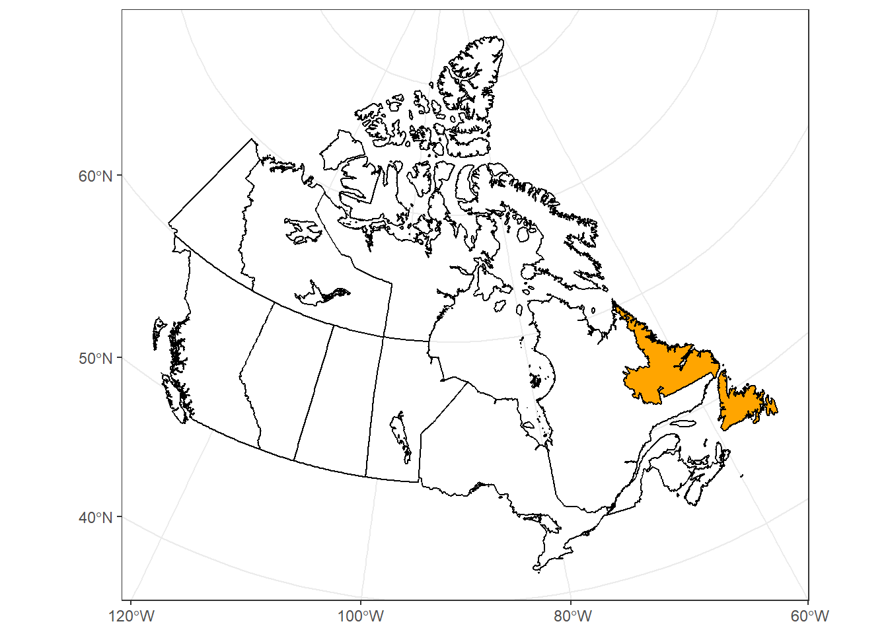

4 Import background basemap
Use ne_states to get provincial/territorial borders from rnaturalearth package
4.1 Canada map and Newfoundland subset
geom_sffunction here allow to open the naturalearth map polygon. Inside this function,fill = ifelse ()allow to identify with a specific color the Newfoundland and Labrador region.coord_sfallow here to set the projection of our choice.scale_x_continuousallow to manually set the breaks of the x-axis.
can_map <- ggplot() +
geom_sf(data = canada_map, colour = "black",
fill = ifelse(canada_map$name == "Newfoundland and Labrador",
'orange', 'white')) +
coord_sf(crs = "+proj=lcc +lat_1=49 +lat_2=77 +lon_0=-91.52 +x_0=0 +y_0=0
+datum=NAD83 +units=m +no_defs") +
scale_x_continuous(breaks = c(-120, -100, -80, -60)) +
theme_bw()
can_map
Subset the map to Newfoundland part (need for next part of the manual):